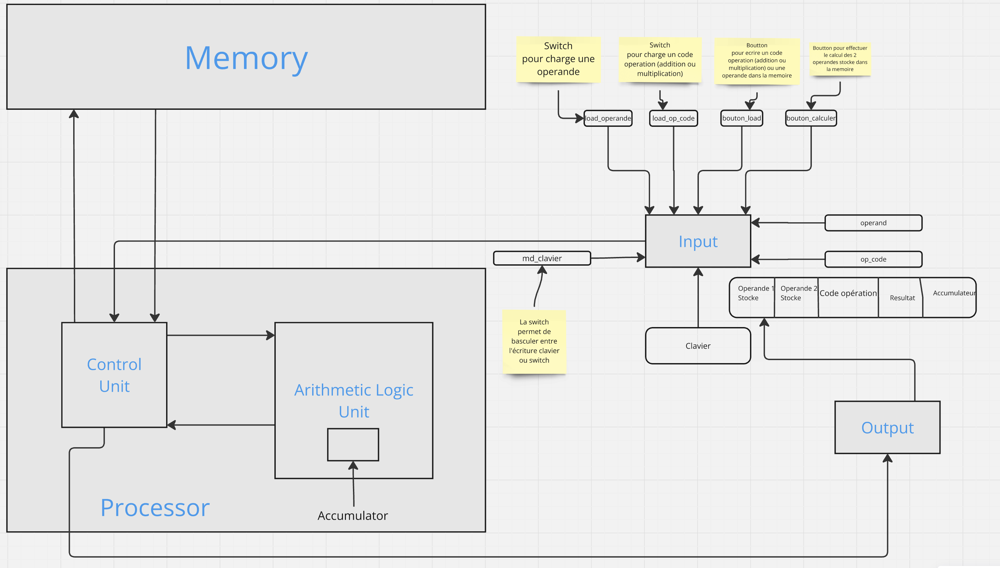
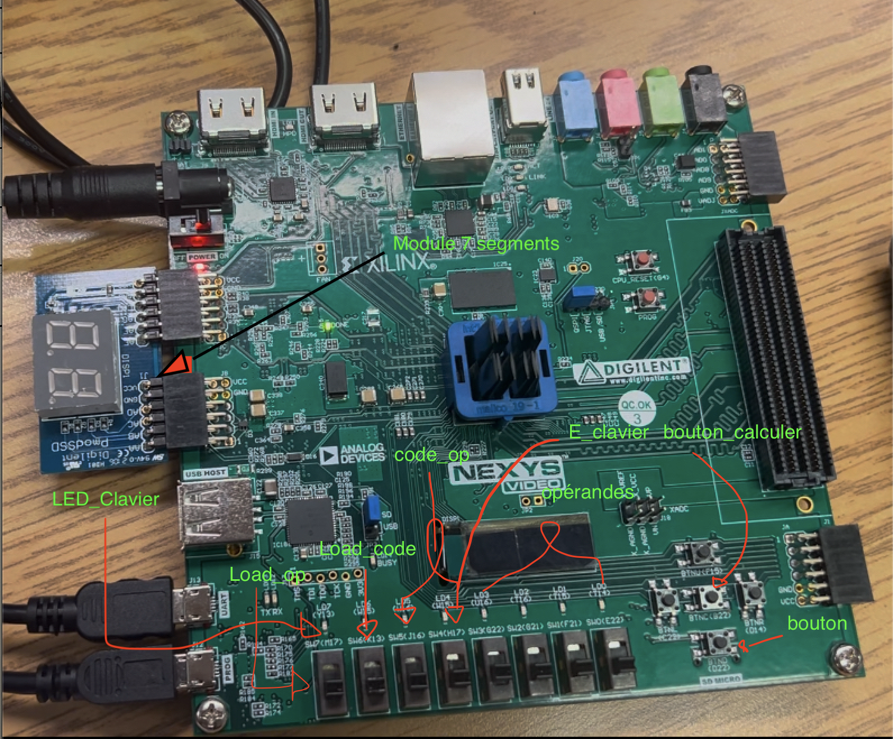

★ Cours de 2e cycle · Maîtrise Honors · MIC7345
← Retour aux projets
Contexte académique exceptionnel
Cours MIC7345 réservé aux profils Honors (2e cycle)
Même cours que la cellule SRAM TGD8T sur Cadence Virtuoso
Niveau maîtrise — conception matérielle avancée
VHDL
FPGA Nexys Video
ModelSim
Vivado
UART
Pipeline
Architecture du processeur
- Noyau DSP avec pipeline fetch / decode / execute
- ALU supportant addition, multiplication et accumulation (MAC)
- Interface mémoire pour chargement des instructions et données
- Module UART pour communication série avec le PC
- Affichage 7 segments (BCD) du résultat en temps réel
- Module de décodage binaire → BCD → affichage
Fichiers VHDL
DSP_projet_final.vhd — entité principale du processeurDSP.vhd — noyau de traitementUART.vhd — module de communication sérieDSP_projrt_final_tb.vhd — testbench de simulationbinary_to_bcd.vhd, bcd_to_7seg_display.vhd — pipeline d'affichage
Points techniques clés
- Logique synchrone sur horloge FPGA avec gestion des états de pipeline
- Testbench complet vérifiant le comportement cycle par cycle
- Validation en simulation avant synthèse sur carte physique
- Contraintes de timing et fichier XDC pour le Nexys Video

